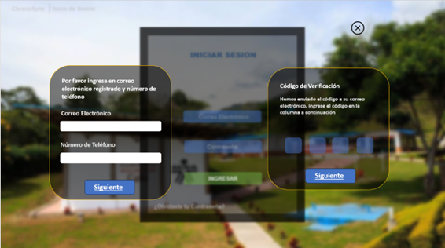

DESCRIPCION:SE SOLICITA UN INICIO DE SESIÓN O RECUPERACIÓN DE CUENTA DIVIDIDO EN DOS PASOS. EN EL PRIMER PASO, SE SOLICITA AL USUARIO INGRESAR SU NÚMERO PRINCIPAL
REGISTRADO Y SU CORREO ELECTRÓNICO. ESTA PANTALLA INCLUYE DOS CAMPOS DE TEXTO CLARAMENTE ETIQUETADOS ("NÚMERO" Y "EMAIL") Y UN BOTÓN AZUL OSCURO CON LA
ETIQUETA "SIGUIENTE" PARA AVANZAR AL SIGUIENTE PASO. EN EL SEGUNDO PASO, TITULADO "CÓDIGO DE VERIFICACIÓN", SE INDICA QUE SE HA ENVIADO UN CÓDIGO AL CORREO
ELECTRÓNICO REGISTRADO DEL USUARIO. EL USUARIO DEBE INTRODUCIR DICHO CÓDIGO EN CUATRO CASILLAS INDEPENDIENTES QUE APARECEN EN LA PANTALLA. TAMBIÉN HAY UN
BOTÓN "SIGUIENTE" SIMILAR AL DE LA PRIMERA PANTALLA, QUE PERMITE CONTINUAR CON EL PROCESO TRAS INGRESAR EL CÓDIGO CORRECTAMENTE. EL DISEÑO ES MINIMALISTA,
CON UN FONDO GRIS EN CADA SECCIÓN Y TEXTO CLARO PARA FACILITAR LA COMPRENSIÓN.
LUEGO DE NUESTRA VALIDACIÓN MUESTRA UNA PANTALLA DESTINADA A LA CREACIÓN O CAMBIO DE CONTRASEÑA. EN LA PARTE SUPERIOR, APARECE EL TÍTULO "NUEVA CONTRASEÑA".
SEGUIDAMENTE, SE PRESENTAN DOS CAMPOS DE TEXTO: EL PRIMERO, ETIQUETADO COMO "NUEVA CONTRASEÑA", PERMITE AL USUARIO INGRESAR SU NUEVA CLAVE E INCLUYE UN ÍCONO
DE OJO PARA ALTERNAR LA VISIBILIDAD DE LO ESCRITO; EL SEGUNDO, ETIQUETADO COMO "CONFIRMAR", ESTÁ DISEÑADO PARA QUE EL USUARIO REINGRESE LA CONTRASEÑA Y
TAMBIÉN CUENTA CON UN ÍCONO SIMILAR PARA MOSTRAR U OCULTAR EL TEXTO. EN LA PARTE INFERIOR, HAY UN BOTÓN VERDE CON LA ETIQUETA "GUARDAR", EL CUAL PERMITE
CONFIRMAR Y GUARDAR LA NUEVA CONTRASEÑA INGRESADA. EL DISEÑO TIENE UN FONDO GRIS CON BORDES REDONDEADOS, MANTENIENDO UNA DISPOSICIÓN CLARA, CENTRADA Y FÁCIL
DE USAR.
|
|

|

|
|